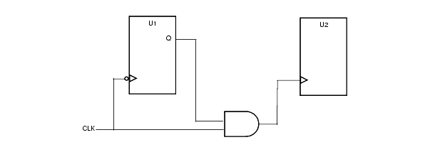
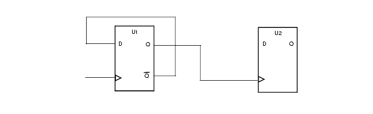
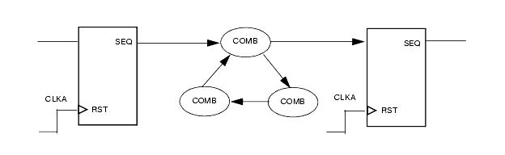
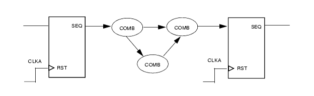
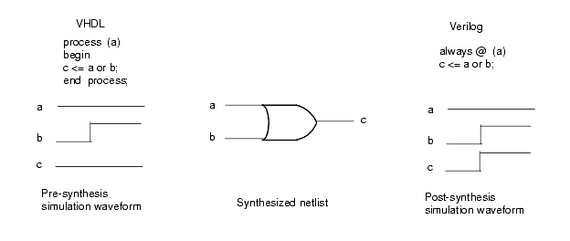
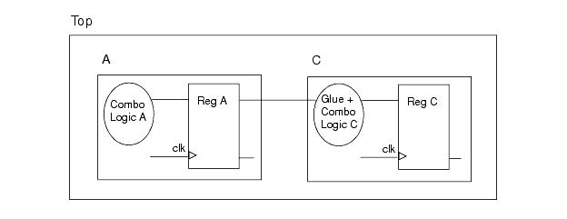

1
RMM RTL Coding RulesIntroduction
This chapter provides detailed reference information for the RMM RTL Coding Guidelines for the Leda Checker tool. This policy contains rules and guidelines defined in the following book:
Reuse Methodology Manual for System-on-a-Chip Designs
By Michael Keating and Pierre Bricaud
published by Kluwer Academic Publishers (1998/1999).
For more information about the Reuse Methodology Manual for System-on-a-Chip Designs, including how to order a copy, visit the Kluwer Academic Publishers Web site:
Chapter 5 of the Reuse Methodology Manual (RMM) covers RTL Coding Guidelines. The rest of this chapter lists the rules and guidelines from Chapter 5 of the RMM that can be tested using the Leda Checker. The rules are divided into rulesets that correspond to the major sections of the RMM RTL guidelines:
Each rule and guideline has a label. In general, the label is composed of the following fields.
G | R_<label>_<id>
Where G or R is a prefix that indicates whether the rule is listed as a rule (R) or a guideline (G).
<label> is the subsection label for the rule or guideline, as indicated in the document IP CatalystSM MORE Assessment Program version v.03.15.99 (very often it is the same subsection number as in Chapter 5 of the RMM).
<id> is a unique integer depending on where the rule is placed in the subsection.
For example, the first rule in section 5.3.1 is classified as a rule and states that only IEEE types should be used. This rule is labeled R_531_1. The guideline that follows is labeled G_531_1, and so on.
The following sections list all of the RMM RTL coding rules implemented in the current version of the Leda Checker.
In some cases, the RMM did not specify rules exactly. In these cases, assumptions were made based on experience. These assumptions are noted throughout the document.
Finite State Machine Recognition
Several of the rules in the RMM policy concern finite state machines. Leda can infer finite state machines (FSMs) from a design and apply rules to constrain the type of FSM accepted. Leda can identify FSMs that are developed using case statements to define the states and transitions. Leda does not recognize FSMs defined using if statements. Leda recognizes 1-process, 2-process, and 3-process FSMs as long as all processes are in the same block (architecture or module).
Basic Coding Practices Ruleset
The following rules are from the basic coding practices ruleset:
G_521_2_A
Message: Use lowercase letters for all signal names, variable names and ports names
Description None Policy RMM_RTL_CODING_GUIDELINES Ruleset BASIC_CODING_PRACTICES Language VHDL Type Block-level Severity Warning
G_521_2_B
Message: Use lowercase letters for all signal reg, net and port names
Description None Policy RMM_RTL_CODING_GUIDELINES Ruleset BASIC_CODING_PRACTICES Language Verilog Type Block-level Severity Warning
G_521_3_A
Message: Use uppercase letters for names of constants and user defined types
Description A constant in VHDL is a constant declaration or a generic parameter declaration. Policy RMM_RTL_CODING_GUIDELINES Ruleset BASIC_CODING_PRACTICES Language VHDL Type Block-level Severity Warning
G_521_3_B
Message: Use uppercase letters for all parameter names
Description None. Policy RMM_RTL_CODING_GUIDELINES Ruleset BASIC_CODING_PRACTICES Language Verilog Type Block-level Severity Warning
G_521_5
Message: Name is too long - Max 20 characters
Description If your design uses several parameters, use short but descriptive names. During elaboration, the synthesis tool concatenates the module's name, parameter names, and parameter values to form the design unit name. Thus, lengthy parameter names can cause excessively long design unit names when you elaborate the design with Design Compiler. Policy RMM_RTL_CODING_GUIDELINES Ruleset BASIC_CODING_PRACTICES Language VHDL/Verilog Type Block-level Severity Warning
G_521_6
Message: Clock name should be clk or prefixed with clk
Description Use the name clk for the clock signal. If there is more than one clock in the design, use clk as the prefix for all clock signals (for example, clk1, clk2, or clk_interface). Policy RMM_RTL_CODING_GUIDELINES Ruleset BASIC_CODING_PRACTICES Language VHDL/Verilog Type Block-level Severity Warning
G_521_9_A
Message: Active high resets should be prefixed with rst
Description Use the name rst for reset signals. If the reset signal is active-low, use rst_n (or substitute n with whatever lowercase character you are using to indicate active-low signals). Policy RMM_RTL_CODING_GUIDELINES Ruleset BASIC_CODING_PRACTICES Language VHDL/Verilog Type Block-level Severity Warning
G_521_9_B
Message: Active low resets should be called rst_n
Description Use the name rst for reset signals. If the reset signal is active-low, use rst_n. Policy RMM_RTL_CODING_GUIDELINES Ruleset BASIC_CODING_PRACTICES Language VHDL/Verilog Type Block-level Severity Warning R_521_10
Message: Always use descending range for multi-bit signals and ports
Example
Description Although the choice is somewhat arbitrary, it is recommended that you use (y downto x) for multibit signals in VHDL and (y:x) where y is greater than x in Verilog. This recommendation is primarily intended to establish a standard, and thus achieve some consistency across multiple designs and design teams (see example). Policy RMM_RTL_CODING_GUIDELINES Ruleset BASIC_CODING_PRACTICES Language VHDL/Verilog Type Block-level Severity Error
The following example shows how to use downto in a port declaration:
entity DW_addinc is generic(WIDTH : natural); port( A,B : in std_logic_vector(WIDTH-1 downto 0); CI : in std_logic; SUM : out std_logic_vector(WIDTH-1 downto 0); CO : out std_logic; ); end DW01_addinc;G_521_11
Message: Use same name/similar names for ports and signals
Description When possible, use the same name or similar names, for ports and signals that are connected. This rule tests that the names are the same or that the name of the signal connected to the port begins with the name of the port followed by a '_'For example: a => a;ora => a_int;Policy RMM_RTL_CODING_GUIDELINES Ruleset BASIC_CODING_PRACTICES Language VHDL/Verilog Type Block-level Severity Warning G_521_13_A
Message: Three state signal names should have suffix _z
Description None Policy RMM_RTL_CODING_GUIDELINES Ruleset BASIC_CODING_PRACTICES Language VHDL/Verilog Type Block-level Severity Warning G_521_13_B
Message: Flipflop outputs should have suffix _r
Description This rule is implementation-dependant. The naming conventions used may vary from company to company, from division to division, or even from project to project. In general, more precise naming convention rules will always be applied in addition to RMM rules. The following naming conventions are applied: register outputs must have suffix _r. Policy RMM_RTL_CODING_GUIDELINES Ruleset BASIC_CODING_PRACTICES Language VHDL/Verilog Type Block-level Severity Warning R_522_1
Message: Underscores are not allowed in top level port names
Description Do not use underscore characters (_) in the entity port declaration for the top-level entity of a hard macro. The reason for the above rule is that VITAL uses underscores as separators to construct names for SDF back-annotation from the SDF entries. However, the RMM is kept deliberately vague here. For example, there is no rule to indicate how to identify the top-level entity. For this implementation, it is assumed that the top-level entity is called "top" or "main". Policy RMM_RTL_CODING_GUIDELINES Ruleset BASIC_CODING_PRACTICES Language VHDL Type Block-level Severity Error R_522_2
Message: Linkage mode is not allowed for top level port declaration
Description A port that is declared in an entity port declaration shall not be of mode LINKAGE. However, the RMM is kept deliberately vague here. For example, there is no rule to indicate how to identify the top-level entity. For this implementation, it is assumed that the top-level entity is called "top" or "main". Policy RMM_RTL_CODING_GUIDELINES Ruleset BASIC_CODING_PRACTICES Language VHDL Type Block-level Severity Error R_522_3
Message: Top level Port must be of type std_logic(_vector), signed or unsigned
Description The type mark in an entity port declaration shall denote a type or subtype that is declared in package std_logic_1164. The type mark in the declaration of a scalar port shall denote a subtype of std_ulogic. The type mark in the declaration of an array port shall denote the type std_logic_vector. However, the RMM is kept deliberately vague here. For example, there is no rule to indicate how to identify the top-level entity. For this implementation, it is assumed that the top-level entity is called "top" or "main". Policy RMM_RTL_CODING_GUIDELINES Ruleset BASIC_CODING_PRACTICES Language VHDL Type Block-level Severity Error G_523_1_A
Message: Only component instantiations are allowed in an architecture named str or str_*
Description The following definitions are assumed for architectures: str contains component instantiation statements and does not contain process statements. A check is made in both directions; that is, if the name of the architecture is rtl, its contents are checked for illegal statements and if an architecture only contains process statements, its name is checked to see if it is valid. Policy RMM_RTL_CODING_GUIDELINES Ruleset BASIC_CODING_PRACTICES Language VHDL Type Block-level Severity Warning G_523_1_B
Message: An architecture of type Simulation should be named sim or sim_*
Description The following definitions are assumed for architectures: sim contains any VHDL. A check is made in both directions; that is, if the name of the architecture is rtl, its contents are checked for illegal statements and if an architecture only contains process statements, its name is checked to see if it is valid. Policy RMM_RTL_CODING_GUIDELINES Ruleset BASIC_CODING_PRACTICES Language VHDL Type Block-level Severity Warning G_523_1_C
Message: An architecture of type Structural should be named str or str_*
Description The following definitions are assumed for architectures: str contains component instantiation statements and does not contain process statements. A check is made in both directions; that is, if the name of the architecture is rtl, its contents are checked for illegal statements and if an architecture only contains process statements, its name is checked to see if it is valid. Policy RMM_RTL_CODING_GUIDELINES Ruleset BASIC_CODING_PRACTICES Language VHDL Type Block-level Severity Warning G_523_1_D
Message: Port assignments are not allowed in testbench architectures
Description The following definitions are assumed for architectures: tb contains any VHDL. A check is made in both directions; that is,. if the name of the architecture is rtl, its contents are checked for illegal statements and if an architecture only contains process statements, its name is checked to see if it is valid. Policy RMM_RTL_CODING_GUIDELINES Ruleset BASIC_CODING_PRACTICES Language VHDL Type Block-level Severity Warning G_523_1_E
Message: Only process statements and signal assignments are allowed in an architecture named rtl or rtl_*
Description The following definitions are assumed for architectures: rtl contains process statements and does not contain component instantiations. A check is made in both directions; that is. if the name of the architecture is rtl, its contents are checked for illegal statements and if an architecture only contains process statements, its name is checked to see if it is valid. Policy RMM_RTL_CODING_GUIDELINES Ruleset BASIC_CODING_PRACTICES Language VHDL Type Block-level Severity Warning G_523_1_F
Message: Architecture is not of type RTL, Structural, Simulation or Testbench
Description The following definitions are assumed for architectures: rtl contains process statements and does not contain component instantiations; str contains component instantiation statements and does not contain process statements; sim contains any VHDL; tb contains any VHDL. A check is made in both directions; that is,. if the name of the architecture is rtl, its contents are checked for illegal statements and if an architecture only contains process statements, its name is checked to see if it is valid. Policy RMM_RTL_CODING_GUIDELINES Ruleset BASIC_CODING_PRACTICES Language VHDL Type Block-level Severity Warning G_523_1_G
Message: An architecture of type Testbench should be named tb or tb_*
Description The following definitions are assumed for architectures: rtl contains process statements and does not contain component instantiations; str contains component instantiation statements and does not contain process statements; sim contains any VHDL; tb contains any VHDL. A check is made in both directions; that is., if the name of the architecture is rtl, its contents are checked for illegal statements and if an architecture only contains process statements, its name is checked to see if it is valid. Policy RMM_RTL_CODING_GUIDELINES Ruleset BASIC_CODING_PRACTICES Language VHDL Type Block-level Severity Warning G_523_1_H
Message: An architecture of type RTL should be named rtl or rtl_*
Description The following definitions are assumed for architectures: rtl contains process statements and does not contain component instantiations. A check is made in both directions; that is, if the name of the architecture is rtl, its contents are checked for illegal statements and if an architecture only contains process statements, its name is checked to see if it is valid. Policy RMM_RTL_CODING_GUIDELINES Ruleset BASIC_CODING_PRACTICES Language VHDL Type Block-level Severity Warning G_527_1
Message: The number of characters in 1 line should not exceed 72 (Line <%value>)
Example
Description Lines that exceed 72 characters are difficult to read in print and on standard computer screens. The 72-character limit provides a margin that enhances the readability of the code. For HDL code (VHDL or Verilog), use carriage returns to divide lines that exceed 72 characters and indent the next line to show that it is a continuation of the previous line. You can use the rule_set_parameter Tcl command and the LINE_LENGTH parameter to change the maximum line length checked by this rule. You can set the maximum number of characters per line in Leda's Tcl shell using the rule_set_parameter command. The default is 72:
leda> rule_set_paramter -rule G_527_1 \
-parameter LINE_LENGTH -value 80Policy RMM_RTL_CODING_GUIDELINES Ruleset BASIC_CODING_PRACTICES Language VHDL/Verilog Type Block-level Severity Warning
Following is an HDL code example showing proper line continuations:
hp_req <= (x0_hp_req or t0_hp_req or x1_hp_req or t1_hp_req or s0_hp_req or t2_hp_req or s1_hp_req or x2_hp_req or x3_hp_req or x4_hp_req or x5_hp_req or wd_hp_req and ea and pf_req nor iip2);R_524_1_A
Message: Header comments are missing
Example
Description This rule checks for the presence of the following words at the beginning of a line in a header comment: Filename, Author, Description, Date, and Modification. It does not (and cannot) check that the information associated with each label is valid. Policy RMM_RTL_CODING_GUIDELINES Ruleset BASIC_CODING_PRACTICES Language VHDL/Verilog Type Block-level Severity Error
Following is an example of an HDL source file with the required comments:
--This confidential and proprietary software may be used --only as authorized by a licensing agreement from --Synopsys Inc. --In the event of publication, the following notice is --applicable: -- -- (C) COPYRIGHT 1996 SYNOPSYS INC. -- ALL RIGHTS RESERVED -- -- The entire notice above must be reproduced on all --authorized copies. -- -- Filename : DWpci_core.vhd -- Author : Jeff Hackett -- Date : 09/17/96 -- Version : 0.1 -- Description : This file has the entity, architecture -- and configuration of the PCI 2.1 -- MacroCell core module. -- The core module has the interface, -- config, initiator, -- and target top-level modules. -- -- Modification History: -- Date By Version Change Description -- ======================================================== -- 9/17/96 JDH 0.1 Original -- 11/13/96 JDH Last pre-Atria changes -- 03/04/97 SKC changes for ism_ad_en_ffd_n -- and tsm_data_ffd_n -- ========================================================R_524_1_B
Message: Modification field missing from header comment
Example
Description This rule checks for the presence of the following words at the beginning of a line in a header comment: Filename, Author, Description, Date, and Modification. It does not (and cannot) check that the information associated with each label is valid. Policy RMM_RTL_CODING_GUIDELINES Ruleset BASIC_CODING_PRACTICES Language VHDL/Verilog Type Block-level Severity Error
Following is an example of an HDL source file with the required comments:
--This confidential and proprietary software may be used --only as authorized by a licensing agreement from --Synopsys Inc. --In the event of publication, the following notice is --applicable: -- -- (C) COPYRIGHT 1996 SYNOPSYS INC. -- ALL RIGHTS RESERVED -- -- The entire notice above must be reproduced on all --authorized copies. -- -- Filename : DWpci_core.vhd -- Author : Jeff Hackett -- Date : 09/17/96 -- Version : 0.1 -- Description : This file has the entity, architecture -- and configuration of the PCI 2.1 -- MacroCell core module. -- The core module has the interface, -- config, initiator, -- and target top-level modules. -- -- Modification History: -- Date By Version Change Description -- ======================================================== -- 9/17/96 JDH 0.1 Original -- 11/13/96 JDH Last pre-Atria changes -- 03/04/97 SKC changes for ism_ad_en_ffd_n -- and tsm_data_ffd_n --========================================================
R_524_1_C
Message: Description field missing from header comment
Example
Description This rule checks for the presence of the following words at the beginning of a line in a header comment: Filename, Author, Description, Date, and Modification. It does not (and cannot) check that the information associated with each label is valid. Policy RMM_RTL_CODING_GUIDELINES Ruleset BASIC_CODING_PRACTICES Language VHDL/Verilog Type Block-level Severity Error
Following is an example of an HDL source file with the required comments:
--This confidential and proprietary software may be used --only as authorized by a licensing agreement from --Synopsys Inc. --In the event of publication, the following notice is --applicable: -- -- (C) COPYRIGHT 1996 SYNOPSYS INC. -- ALL RIGHTS RESERVED -- -- The entire notice above must be reproduced on all --authorized copies. -- -- Filename : DWpci_core.vhd -- Author : Jeff Hackett -- Date : 09/17/96 -- Version : 0.1 -- Description : This file has the entity, architecture -- and configuration of the PCI 2.1 -- MacroCell core module. -- The core module has the interface, -- config, initiator, -- and target top-level modules. -- -- Modification History: -- Date By Version Change Description -- ======================================================== -- 9/17/96 JDH 0.1 Original -- 11/13/96 JDH Last pre-Atria changes -- 03/04/97 SKC changes for ism_ad_en_ffd_n -- and tsm_data_ffd_n --========================================================
R_524_1_D
Message: Date field missing from header comment
Example
Description This rule checks for the presence of the following words at the beginning of a line in a header comment: Filename, Author, Description, Date, and Modification. It does not (and cannot) check that the information associated with each label is valid. Policy RMM_RTL_CODING_GUIDELINES Ruleset BASIC_CODING_PRACTICES Language VHDL/Verilog Type Block-level Severity Error
Following is an example of an HDL source file with the required comments:
--This confidential and proprietary software may be used --only as authorized by a licensing agreement from --Synopsys Inc. --In the event of publication, the following notice is --applicable: -- -- (C) COPYRIGHT 1996 SYNOPSYS INC. -- ALL RIGHTS RESERVED -- -- The entire notice above must be reproduced on all --authorized copies. -- -- Filename : DWpci_core.vhd -- Author : Jeff Hackett -- Date : 09/17/96 -- Version : 0.1 -- Description : This file has the entity, architecture -- and configuration of the PCI 2.1 -- MacroCell core module. -- The core module has the interface, -- config, initiator, -- and target top-level modules. -- -- Modification History: -- Date By Version Change Description -- ======================================================== -- 9/17/96 JDH 0.1 Original -- 11/13/96 JDH Last pre-Atria changes -- 03/04/97 SKC changes for ism_ad_en_ffd_n -- and tsm_data_ffd_n --========================================================
R_524_1_E
Message: Author field missing from header comment
Example
Description This rule checks for the presence of the following words at the beginning of a line in a header comment: Filename, Author, Description, Date, and Modification. It does not (and cannot) check that the information associated with each label is valid. Policy RMM_RTL_CODING_GUIDELINES Ruleset BASIC_CODING_PRACTICES Language VHDL/Verilog Type Block-level Severity Error
Following is an example of an HDL source file with the required comments:
--This confidential and proprietary software may be used --only as authorized by a licensing agreement from --Synopsys Inc. --In the event of publication, the following notice is --applicable: -- -- (C) COPYRIGHT 1996 SYNOPSYS INC. -- ALL RIGHTS RESERVED -- -- The entire notice above must be reproduced on all --authorized copies. -- -- Filename : DWpci_core.vhd -- Author : Jeff Hackett -- Date : 09/17/96 -- Version : 0.1 -- Description : This file has the entity, architecture -- and configuration of the PCI 2.1 -- MacroCell core module. -- The core module has the interface, -- config, initiator, -- and target top-level modules. -- -- Modification History: -- Date By Version Change Description -- ======================================================== -- 9/17/96 JDH 0.1 Original -- 11/13/96 JDH Last pre-Atria changes -- 03/04/97 SKC changes for ism_ad_en_ffd_n -- and tsm_data_ffd_n --========================================================
R_524_1_F
Message: Filename field missing from header comment
Example
Description This rule checks for the presence of the following words at the beginning of a line in a header comment: Filename, Author, Description, Date, and Modification. It does not (and cannot) check that the information associated with each label is valid. Policy RMM_RTL_CODING_GUIDELINES Ruleset BASIC_CODING_PRACTICES Language VHDL/Verilog Type Block-level Severity Error
Following is an example of an HDL source file with the required comments:
--This confidential and proprietary software may be used --only as authorized by a licensing agreement from --Synopsys Inc. --In the event of publication, the following notice is --applicable: -- -- (C) COPYRIGHT 1996 SYNOPSYS INC. -- ALL RIGHTS RESERVED -- -- The entire notice above must be reproduced on all --authorized copies. -- -- Filename : DWpci_core.vhd -- Author : Jeff Hackett -- Date : 09/17/96 -- Version : 0.1 -- Description : This file has the entity, architecture -- and configuration of the PCI 2.1 -- MacroCell core module. -- The core module has the interface, -- config, initiator, -- and target top-level modules. -- -- Modification History: -- Date By Version Change Description -- ======================================================== -- 9/17/96 JDH 0.1 Original -- 11/13/96 JDH Last pre-Atria changes -- 03/04/97 SKC changes for ism_ad_en_ffd_n -- and tsm_data_ffd_n --========================================================
R_525_1_B
Message: Function must have a header comment
Description None. Policy RMM_RTL_CODING_GUIDELINES Ruleset BASIC_CODING_PRACTICES Language Verilog Type Block-level Severity Error R_525_1_C
Message: Task must have a header comment
Description None. Policy RMM_RTL_CODING_GUIDELINES Ruleset BASIC_CODING_PRACTICES Language Verilog Type Block-level Severity Error R_525_1_D
Message: Process must have a header comment
Description None. Policy RMM_RTL_CODING_GUIDELINES Ruleset BASIC_CODING_PRACTICES Language VHDL Type Block-level Severity Error R_525_1_E
Message: Subprogram must have a header comment
Description None. Policy RMM_RTL_CODING_GUIDELINES Ruleset BASIC_CODING_PRACTICES Language VHDL Type Block-level Severity Error R_526_1
Message: Use a separate line for each HDL statement
Description Although VHDL and Verilog allow more than one statement per line, the code is more readable and maintainable if each statement or command is on a separate line. Note that the Checker reports one error at a time in each process, subprogram, or block statement. Policy RMM_RTL_CODING_GUIDELINES Ruleset BASIC_CODING_PRACTICES Language VHDL/Verilog Type Block-level Severity Error R_529_1
Message: VHDL or Verilog reserved words cannot be used as identifiers
Description Do not use VHDL or Verilog reserved words for names of any elements in your RTL source files. Because macro designs must be translatable from VHDL to Verilog and from Verilog to VHDL, it is important not to use VHDL reserved words in Verilog code, and not to use Verilog reserved words in VHDL code. Policy RMM_RTL_CODING_GUIDELINES Ruleset BASIC_CODING_PRACTICES Language VHDL/Verilog Type Block-level Severity Error R_5210_1_A
Message: Ports must be declared in the following order: in out inout buffer linkage
Example
Description Declare ports in a logical order and keep this order consistent throughout the design (see example). Policy RMM_RTL_CODING_GUIDELINES Ruleset BASIC_CODING_PRACTICES Language VHDL Type Block-level Severity Error
Declare ports in the following order:
Inputs:
- Clocks
- Resets
- Enables
- Other control signals
- Data and address lines
Outputs:
- Clocks
- Resets
- Enables
- Other control signals
- Data
Use comments to describe groups of ports:
entity my_fir is generic ( DATA_WIDTH : positive; COEF_WIDTH : positive; ACC_WIDTH : positive; ORDER : positive ); port ( -- -- Control Inputs -- clk : in std_logic; rst_n : in std_logic; run : in std_logic; load : in std_logic; tc : in std_logic; -- -- Data Inputs -- data_in : in std_logic_vector(DATA_WIDTH-1 downto 0); coef_in : in std_logic_vector(COEF_WIDTH-1 downto 0); sum_in : in std_logic_vector(ACC_WIDTH-1 downto 0); -- -- Control Outputs -- start : out std_logic; hold : out std_logic; -- -- Data Outputs -- sum_out : out std_logic_vector(ACC_WIDTH-1 downto 0) ); end my_fir;R_5210_1_B
Message: Ports must be declared in the following order: input inout output
Example
Description Declare ports in a logical order, and keep this order consistent throughout the design (see example). Policy RMM_RTL_CODING_GUIDELINES Ruleset BASIC_CODING_PRACTICES Language Verilog Type Block-level Severity Error
Declare ports in the following order:
Inputs:
- Clocks
- Resets
- Enables
- Other control signals
- Data and address lines
Outputs:
- Clocks
- Resets
- Enables
- Other control signals
- Data
G_5210_2
Message: Declare one port per line
Description Declare one port per line (preferably with a comment following it on the same line). Policy RMM_RTL_CODING_GUIDELINES Ruleset BASIC_CODING_PRACTICES Language VHDL/Verilog Type Block-level Severity Warning R_5211_1
Message: Use named association when instantiating design units
Example
Description Connection by position is dangerous and can generate errors that are hard to debug when the instantiated cell port map changes. Connecting cells by name ensures that the connection is always valid even when there are changes in the instantiated cell's mapping. Policy RMM_RTL_CODING_GUIDELINES Ruleset BASIC_CODING_PRACTICES Language VHDL/Verilog Type Block-level Severity Error
Using named association for port mapping:
VHDL:
-- instantiate my_add U_ADD: my_add generic map (width => WORDLENGTH) port map ( a => in1, b => in2, ci => carry_in, sum => sum, co => carry_out );Verilog:
// instantiate my_add my_add #('WORDLENGTH) U_ADD ( .a (in1 ), .b (in2 ), .ci (carry_in ), .sum (sum ), .co (carry_out) );G_5212_1
Message: An entity, its architecture and its configuration should be in a single file named <entity_name>.vhd
Description Place entity, architecture, and configuration sections of your VHDL design in the same file. Putting all the information about a particular design in one file makes the design easier to understand and maintain. Policy RMM_RTL_CODING_GUIDELINES Ruleset BASIC_CODING_PRACTICES Language VHDL Type Block-level Severity Warning G_5214_2
Message: Use Vector operations on arrays rather than for loops
Example
Description A warning tag is flagged whenever for loops are used. Arrays are significantly faster to simulate than for loops. To improve simulation performance, use vector operations on arrays rather than for loops whenever possible (see example). Policy RMM_RTL_CODING_GUIDELINES Ruleset BASIC_CODING_PRACTICES Language VHDL/Verilog Type Block-level Severity Warning
Using arrays for faster simulation:
Poor coding style:
function my_xor( bbit : std_logic; avec : std_logic_vector(x downto y) ) return std_logic_vector is variable cvec : std_logic_vector(avec'range-1 downto 0); begin for i in avec'range loop -- bit-level for loop cvec(i) := avec(i) xor bbit; -- bit-level xor end loop; return(cvec); end;Recommended coding style:
function my_xor( bbit : std_logic; avec : std_logic_vector(x downto y) ) return std_logic_vector is variable cvec, temp : std_logic_vector(avec'range-1 downto 0); begin temp := (others => bbit); cvec := avec xor temp; return(cvec); end;R_5215_1
Message: Every process must have a (meaningful) process label
Example
Description Label each process block with a meaningful name. This is very helpful for debug. For example, you can set a breakpoint by referencing the process label. In a multilayered design hierarchy, keep the labels short and meaningful. Long process and instance labels can cause excessively long path names in the design hierarchy. Policy RMM_RTL_CODING_GUIDELINES Ruleset BASIC_CODING_PRACTICES Language VHDL Type Block-level Severity Error
Following is an example of a meaningful process label:
-- Synchronize requests (hold for one clock). SYNC_PROC : process (req1, req2, rst, clk) ... process body here ... end process SYNC_PROC;G_5215_2
Message: Process labels should end with _PROC
Example
Description Label each process block with a meaningful name. This is very helpful for debug. For example, you can set a breakpoint by referencing the process label. In a multilayered design hierarchy, keep the labels short and meaningful. Long process and instance labels can cause excessively long path names in the design hierarchy. See the following example. Policy RMM_RTL_CODING_GUIDELINES Ruleset BASIC_CODING_PRACTICES Language VHDL Type Block-level Severity Warning
Following is an example of a meaningful process label:
-- Synchronize requests (hold for one clock). SYNC_PROC : process (req1, req2, rst, clk) ... process body here ... end process SYNC_PROC;R_5215_3
Message: Every instance must have a (meaningful) label
Description In a multilayered design hierarchy, keep the labels short and meaningful. Long process and instance labels can cause excessively long path names in the design hierarchy. Policy RMM_RTL_CODING_GUIDELINES Ruleset BASIC_CODING_PRACTICES Language Verilog Type Block-level Severity Warning G_5215_4
Message: Instance names should begin with U_
Description In a multilayered design hierarchy, keep the labels short and meaningful. Long process and instance labels can cause excessively long path names in the design hierarchy. Policy RMM_RTL_CODING_GUIDELINES Ruleset BASIC_CODING_PRACTICES Language VHDL/Verilog Type Block-level Severity Warning Coding for Portability Ruleset
The following rules are from the coding for portability ruleset:
R_531_1
Message: All types and subtypes should be based on IEEE standard types
Example
Description You can create additional types and subtypes, but all types and subtypes should be based on IEEE standard types. The following example shows how to create a subtype (word_type) based on the IEEE standard type std_logic_vector. Policy RMM_RTL_CODING_GUIDELINES Ruleset CODING_FOR_PORTABILITY Language VHDL Type Block-level Severity Error
The following example shows how to create a subtype from a std_logic_vector:
--Create new 16-bit subtype subtype WORD_TYPE is std_logic_vector (15 downto 0);G_531_2
Message: Use std_logic rather than std_ulogic when possible
Description Use std_logic rather than std_ulogic. Likewise, use std_logic_vector rather than std_ulogic_vector. The std_logic and std_logic_vector types provide the resolution functions required for tristate buses. The std_ulogic and std_ulogic_vector types do not provide resolution functions. Note: standardizing on either std_logic or std_ulogic is more important than which of the two you select. There are advantages and disadvantages to each. Most designers today use std_logic, which is somewhat better supported by EDA tools. In most applications, the availability of resolution functions is not required. Policy RMM_RTL_CODING_GUIDELINES Ruleset CODING_FOR_PORTABILITY Language VHDL Type Block-level Severity Warning G_531_4
Message: Types bit and bit_vector should not be used
Example
Description Do not use the types bit or bit_vector. Many simulators do not provide built-in arithmetic functions for these types. The following example shows how to use built-in arithmetic packages for std_logic_vectors. Policy RMM_RTL_CODING_GUIDELINES Ruleset CODING_FOR_PORTABILITY Language VHDL Type Block-level Severity Warning
The following example shows how to use built-in arithmetic functions for std_logic_vectors:
use ieee.std_logic_arith.all; signal a,b,c,d:std_logic_vector(y downto x); c <= a + b;G_532_1
Message: Do not use literals in statements, use constants instead
Description Do not use hard-coded numeric values in your design. As an exception, you can use the values 0 and 1 (but not in combination, as in 1001). If the design requires modification, it is faster and safer to change the one statement where the constant is defined, instead of changing all the statements where the change must be propagated. Policy RMM_RTL_CODING_GUIDELINES Ruleset CODING_FOR_PORTABILITY Language VHDL Type Block-level Severity Warning G_533_1
Message: All definitions for a design should be in a separate package
Description This rule checks that all type, subtype, and subprogram declarations are in packages. Policy RMM_RTL_CODING_GUIDELINES Ruleset CODING_FOR_PORTABILITY Language VHDL Type Block-level Severity Warning G_536_2
Message: Do not instantiate Verilog predefined gates in the design
Description Avoid instantiating gates in the design. Gate-level designs are very hard to read, and thus difficult to maintain and reuse. If technology-specific gates are used, then the design is not portable to other technologies. Policy RMM_RTL_CODING_GUIDELINES Ruleset CODING_FOR_PORTABILITY Language Verilog Type Block-level Severity Warning G_537_1
Message: Generate statements are not allowed
Description None Policy RMM_RTL_CODING_GUIDELINES Ruleset CODING_FOR_PORTABILITY Language VHDL Type Block-level Severity Warning G_537_2
Message: Block statements are not allowed
Description None Policy RMM_RTL_CODING_GUIDELINES Ruleset CODING_FOR_PORTABILITY Language VHDL Type Block-level Severity Warning G_537_3
Message: Do not use complex expressions to initialize constants
Description Complex expressions are defined as any binary operation or function call. Policy RMM_RTL_CODING_GUIDELINES Ruleset CODING_FOR_PORTABILITY Language VHDL Type Block-level Severity Warning Clocks and Resets Ruleset
The following rules are from the clocks and resets ruleset:
G_541_1
Message: Avoid using both positive-edge and negative-edge triggered flip-flops in your design
Description Mixed clock edges may be necessary in some designs. In designs with very aggressive timing goals, for example, it may be necessary to capture data on both edges of the clock. However, clocking on both edges creates several problems, and should be used cautiously: To check this rule on the entire design, you must specify a top design unit.
- The duty cycle of the clock becomes a critical issue in timing analysis, in addition to the clock frequency itself.
- Most scan-based testing methodologies require separate handling of positive- and negative-edge triggered flops.
Policy RMM_RTL_CODING_GUIDELINES Ruleset CLOCKS_AND_RESETS Language VHDL/Verilog Type Chip-level Severity Warning G_542_1
Message: Buffers should not be explicitly added to clock path
Description Acceptable process templates are defined in guideline G_551_1 and these preclude the use of clock buffers within a unit, as all clocks have to be declared as input ports. Clock buffers are normally inserted after synthesis as part of the physical design. In synthesizable RTL code, clock nets are normally considered ideal nets, with no delays. During place and route, the clock tree insertion tool inserts the appropriate structure for creating as close to an ideal, balanced clock distribution network as possible.To check this rule on the entire design, a top design unit must be provided. Policy RMM_RTL_CODING_GUIDELINES Ruleset CLOCKS_AND_RESETS Language VHDL/Verilog Type Chip-level Severity Warning G_543_1
Message: Gated clocks are not allowed in the design
Example
Description Acceptable process templates are defined in guideline G_551_1; these guidelines prohibit the use of gated clocks within a unit, as all clocks have to be declared as input ports. Clock gating circuits tend to be technology-specific and timing-dependent. Improper timing of a gated clock can generate a false clock or glitch, causing a flip-flop to clock in the wrong data. Also, the skew of different local clocks can cause hold time violations.Gated clocks also cause limited testability because the logic clocked by a gated clock cannot be made part of a scan chain (see the following example).Although gated clocks are required for many low-powered designs, they should not be coded in the RTL for a macro. If individual flip-flops need to be gated within a design, the clock gating should be inserted by a tool such as Power Compiler, so that the RTL remains technology portable.To check this rule on the entire design, you must specify a top design unit. Policy RMM_RTL_CODING_GUIDELINES Ruleset CLOCKS_AND_RESETS Language VHDL/Verilog Type Chip-level Severity Warning
The following is an example of an invalid circuit. It will have limited testability and skew problems because of the gated clock.
Note that U2 cannot be clocked during scan-in, test, or scan-out, and cannot be made part of the scan chain.

G_544_1
Message: Clock should be visible from top unit
Example
Description Acceptable process templates are defined in guideline G_551_1; these guidelines prohibit the use of internally generated clocks within a unit, as all clocks have to be declared as input ports. Internally generated clocks cause limited testability because logic driven by the internally generated clock cannot be made part of a scan chain. Internally generated clocks also make it more difficult to constrain the design for synthesis. The example below shows a design in which U2 cannot be clocked during scan-in, test, or scan-out, and cannot be made part of the scan chain because it is clocked by an internally generated clock. As an alternative, design synchronously or use multiple clocks.To check this rule on the entire design, you must specify a a top design unit. Policy RMM_RTL_CODING_GUIDELINES Ruleset CLOCKS_AND_RESETS Language VHDL/Verilog Type Chip-level Severity Warning
The following is an example of an invalid circuit that has an internally generated clock

G_546_1
Message: Avoid internally generated reset/set/load <%item>
Description Avoid internally generated, conditional resets, sets, and loads if possible. Generally, all the registers in the macro should be reset, set, or loaded at the same time. This approach makes analysis and design much simpler and easier.During test stages, all flip-flops must be controllable. If the reset, set, or load is internally generated and cannot be controlled at the boundary of the chip, either the test coverage will decrease or the test time will increase (as the number of test patterns will increase).To check this rule on the entire design, you must specify a top design unit. Policy RMM_RTL_CODING_GUIDELINES Ruleset CLOCKS_AND_RESETS Language VHDL/Verilog Type Chip-level Severity Warning Coding for Synthesis Ruleset
The following rules are from the coding for synthesis ruleset:
G_551_1_A
Message: Unrecognized process template. Use the predefined templates for processes
Example
Description Registers (flip-flops) are the preferred mechanisms for sequential logic. To maintain consistency and ensure correct synthesis, use the following template to infer technology-independent registers. Use the design's reset signal to initialize registered signals, as shown in the example. Do not initialize the signal in the declaration; this can cause mismatches between pre- and post-synthesis simulation. Policy RMM_RTL_CODING_GUIDELINES Ruleset CODING_FOR_SYNTHESIS Language VHDL Type Block-level Severity Warning
Following is a VHDL template for sequential processes:
-- Process with synchronous reset EX19A_PROC: process(clk) begin IF (clk'event and clk = '1') then if rst = '1' then . . . else . . . end if; end if; end process EX19A_PROC; -- Process with asynchronous reset EX19B_PROC: process(clk, rst_a) begin IF rst_a = '1' then . . . elseif (clk'event and clk = '1') then . . . end if; end process EX19B_PROC;G_551_1_B
Message: The always keyword must be followed by an event list @(...) in a sequential block
Example
Description Registers (flip-flops) are the preferred mechanisms for sequential logic. To maintain consistency and ensure correct synthesis, use the following template to infer technology-independent registers. Use the design's reset signal to initialize registered signals, as shown in the example. Do not initialize the signal in the declaration; this can cause mismatches between pre- and post-synthesis simulation. Policy RMM_RTL_CODING_GUIDELINES Ruleset CODING_FOR_SYNTHESIS Language Verilog Type Block-level Severity Warning
Following is a Verilog template for sequential processes:
// Process with synchronous reset always @(posedge clk) begin : EX20A_PROC if (reset == 1'b1) begin . . . end else begin . . . end end // EX20A_PROC // Process with asynchronous reset always @(posedge clk or posedge rst_a) begin : EX20B_PROC if (reset == 1'b1) begin . . . end else begin . . . end end // Ex20b_procG_551_1_C
Message: Use 'if(<%context> == 'b0)' or 'if(<%context> == 'b1)' for synchronous reset/set/load expressions : <%context>
Example
Description Registers (flip-flops) are the preferred mechanisms for sequential logic. To maintain consistency and ensure correct synthesis, use the following template to infer technology-independent registers. Use the design's reset, set, or load signal to initialize registered signals, as shown in the example. Do not initialize the signal in the declaration; this can cause mismatches between pre- and post-synthesis simulation. Policy RMM_RTL_CODING_GUIDELINES Ruleset CODING_FOR_SYNTHESIS Language Verilog Type Block-level Severity Warning
Following is a Verilog template for sequential processes:
// Process with synchronous reset always @(posedge clk) begin : EX20A_PROC if (reset == 1'b1) begin . . . end else begin . . . end end // EX20A_PROC // Process with asynchronous reset always @(posedge clk or posedge rst_a) begin : EX20B_PROC if (reset == 1'b1) begin . . . end else begin . . . end end // Ex20b_procG_551_1_D
Message: Use 'if(<%context> == 'b1)' for rising edge asynchronous reset/set/load expressions
Example
Description Registers (flip-flops) are the preferred mechanisms for sequential logic. To maintain consistency and ensure correct synthesis, use the following template to infer technology-independent registers. Use the design's reset, set, or load signal to initialize registered signals, as shown in the example. Do not initialize the signal in the declaration; this can cause mismatches between pre- and post-synthesis simulation. Policy RMM_RTL_CODING_GUIDELINES Ruleset CODING_FOR_SYNTHESIS Language Verilog Type Block-level Severity Warning
Following is a Verilog template for sequential processes:
// Process with synchronous reset always @(posedge clk) begin : EX20A_PROC if (reset == 1'b1) begin . . . end else begin . . . end end // EX20A_PROC // Process with asynchronous reset always @(posedge clk or posedge rst_a) begin : EX20B_PROC if (reset == 1'b1) begin . . . end else begin . . . end end // Ex20b_procG_551_1_E
Message: Use 'if(<%context> == 'b0)' for falling edge asynchronous reset/set/load expressions
Example
Description Registers (flip-flops) are the preferred mechanisms for sequential logic. To maintain consistency and ensure correct synthesis, use the following template to infer technology-independent registers. Use the design's reset, set, or load signal to initialize registered signals, as shown in the example. Do not initialize the signal in the declaration; this can cause mismatches between pre- and post-synthesis simulation. Policy RMM_RTL_CODING_GUIDELINES Ruleset CODING_FOR_SYNTHESIS Language Verilog Type Block-level Severity Warning
Following is a Verilog template for sequential processes:
// Process with synchronous reset always @(posedge clk) begin : EX20A_PROC if (reset == 1'b1) begin . . . end else begin . . . end end // EX20A_PROC // Process with asynchronous reset always @(posedge clk or posedge rst_a) begin : EX20B_PROC if (reset == 1'b1) begin . . . end else begin . . . end end // Ex20b_procG_551_1_F
Message: Use if ( <%item> = '1') or if ( <%item> = '0' ) for reset/set/load expressions
Example
Description Registers (flip-flops) are the preferred mechanisms for sequential logic. To maintain consistency and ensure correct synthesis, use the following template to infer technology-independent registers. Use the design's reset, set, or load signal to initialize registered signals, as shown in the example. Do not initialize the signal in the declaration; this can cause mismatches between pre- and post-synthesis simulation. Policy RMM_RTL_CODING_GUIDELINES Ruleset CODING_FOR_SYNTHESIS Language VHDL Type Block-level Severity Warning
Following is a VHDL template for sequential processes:
-- Process with synchronous reset EX19A_PROC: process(clk) begin IF (clk'event and clk = '1') then if rst = '1' then . . . else . . . end if; end if; end process EX19A_PROC; -- Process with asynchronous reset EX19B_PROC: process(clk, rst_a) begin IF rst_a = '1' then . . . elseif (clk'event and clk = '1') then . . . end if; end process EX19B_PROC;G_551_1_G
Message: Do not use initial constructs to initialize signals
Example
Description Initial constructs are ignored during synthesis. Using initial constructs to initialize signals instead of using a resets in the always constructs generates flip-flops without resets. Initial constructs also cause synthesis/simulation mismatches. Policy RMM_RTL_CODING_GUIDELINES Ruleset CODING_FOR_SYNTHESIS Language Verilog Type Block-level Severity Warning
Following is a Verilog template for sequential processes:
// Process with synchronous reset always @(posedge clk) begin : EX20A_PROC if (reset == 1'b1) begin . . . end else begin . . . end end // EX20A_PROC // Process with asynchronous reset always @(posedge clk or posedge rst_a) begin : EX20B_PROC if (reset == 1'b1) begin . . . end else begin . . . end end // Ex20b_procG_551_1_H
Message: There should be exactly one clock signal in the sensitivity list of a sequential block
Example
Description Using multiple clocks in the sensitivity list can produce non-synthesizable code and generate local metastability issues. It is better to use only one clock signal and one reset signal per process/always construct. Policy RMM_RTL_CODING_GUIDELINES Ruleset CODING_FOR_SYNTHESIS Language VHDL/Verilog Type Block-level Severity Warning
Following is a VHDL template for sequential processes:
-- Process with synchronous reset EX19A_PROC: process(clk) begin IF (clk'event and clk = '1') then if rst = '1' then . . . else . . . end if; end if; end process EX19A_PROC; -- Process with asynchronous reset EX19B_PROC: process(clk, rst_a) begin IF rst_a = '1' then . . . elseif (clk'event and clk = '1') then . . . end if; end process EX19B_PROC;Following is a Verilog template for sequential processes:
// Process with synchronous reset always @(posedge clk) begin : EX20A_PROC if (reset == 1'b1) begin . . . end else begin . . . end end // EX20A_PROC // Process with asynchronous reset always @(posedge clk or posedge rst_a) begin : EX20B_PROC if (reset == 1'b1) begin . . . end else begin . . . end end // Ex20b_procG_551_1_I
Message: There should be at most one asynchronous reset/set/load signal in a sequential block
Example
Description Registers (flip-flops) are the preferred mechanism for sequential logic. To maintain consistency and ensure correct synthesis, use the following template to infer technology-independent registers. Use the design's reset, set, or load signal to initialize registered signals, as shown in the example. Do not initialize the signal in the declaration; this can cause mismatches between pre- and post-synthesis simulation. Policy RMM_RTL_CODING_GUIDELINES Ruleset CODING_FOR_SYNTHESIS Language VHDL/Verilog Type Block-level Severity Warning
Following is a VHDL template for sequential processes:
-- Process with synchronous reset EX19A_PROC: process(clk) begin IF (clk'event and clk = '1') then if rst = '1' then . . . else . . . end if; end if; end process EX19A_PROC; -- Process with asynchronous reset EX19B_PROC: process(clk, rst_a) begin IF rst_a = '1' then . . . elseif (clk'event and clk = '1') then . . . end if; end process EX19B_PROC;Following is a Verilog template for sequential processes:
// Process with synchronous reset always @(posedge clk) begin : EX20A_PROC if (reset == 1'b1) begin . . . end else begin . . . end end // EX20A_PROC // Process with asynchronous reset always @(posedge clk or posedge rst_a) begin : EX20B_PROC if (reset == 1'b1) begin . . . end else begin . . . end end // Ex20b_procG_551_1_J
Message: An asynchronous reset/set/load signal should be preceded by the keyword 'posedge' or 'negedge' in the sensitivity list of a sequential block
Example
Description Registers (flip-flops) are the preferred mechanism for sequential logic. To maintain consistency and ensure correct synthesis, use the following template to infer technology-independent registers. Use the design's reset, set, or load signal to initialize registered signals, as shown in the example. Do not initialize the signal in the declaration; this can cause mismatches between pre- and post-synthesis simulation. Policy RMM_RTL_CODING_GUIDELINES Ruleset CODING_FOR_SYNTHESIS Language Verilog Type Block-level Severity Warning
Following is a Verilog template for sequential processes:
// Process with synchronous reset always @(posedge clk) begin : EX20A_PROC if (reset == 1'b1) begin . . . end else begin . . . end end // EX20A_PROC // Process with asynchronous reset always @(posedge clk or posedge rst_a) begin : EX20B_PROC if (reset == 1'b1) begin . . . end else begin . . . end end // Ex20b_procG_551_1_K
Message: There should be at most one synchronous reset/set/load signal in a sequential block
Example
Description Registers (flip-flops) are the preferred mechanism for sequential logic. To maintain consistency and ensure correct synthesis, use the following template to infer technology-independent registers. Use the design's reset, set, or load signal to initialize registered signals, as shown in the example. Do not initialize the signal in the declaration; this can cause mismatches between pre- and post-synthesis simulation. Policy RMM_RTL_CODING_GUIDELINES Ruleset CODING_FOR_SYNTHESIS Language VHDL/Verilog Type Block-level Severity Warning
Following is a VHDL template for sequential processes:
-- Process with synchronous reset EX19A_PROC: process(clk) begin IF (clk'event and clk = '1') then if rst = '1' then . . . else . . . end if; end if; end process EX19A_PROC; -- Process with asynchronous reset EX19B_PROC: process(clk, rst_a) begin IF rst_a = '1' then . . . elseif (clk'event and clk = '1') then . . . end if; end process EX19B_PROC;Following is a Verilog template for sequential processes:
// Process with synchronous reset always @(posedge clk) begin : EX20A_PROC if (reset == 1'b1) begin . . . end else begin . . . end end // EX20A_PROC // Process with asynchronous reset always @(posedge clk or posedge rst_a) begin : EX20B_PROC if (reset == 1'b1) begin . . . end else begin . . . end end // Ex20b_procG_551_1_L
Message: Always block with event and level expression detected in sensitivity list. This block is not synthesizable.
Example
Description Registers (flip-flops) are the preferred mechanisms for sequential logic. To maintain consistency and ensure correct synthesis, use the following template to infer technology-independent registers. Use the design's reset signal to initialize registered signals, as shown in the example. Do not initialize the signal in the declaration; this can cause mismatches between pre- and post-synthesis simulation. Policy RMM_RTL_CODING_GUIDELINES Ruleset CODING_FOR_SYNTHESIS Language Verilog Type Block-level Severity Warning
Following is a Verilog template for sequential processes:
// Process with synchronous reset always @(posedge clk) begin : EX20A_PROC if (reset == 1'b1) begin . . . end else begin . . . end end // EX20A_PROC // Process with asynchronous reset always @(posedge clk or posedge rst_a) begin : EX20B_PROC if (reset == 1'b1) begin . . . end else begin . . . end end // Ex20b_procR_552_1
Message: Avoid inferring latches in design
Example
Description Avoid using latches in your design. As an exception, you can instantiate technology-independent GTECH D latches. However, all latches must be instantiated, and you must provide documentation that lists each latch and describes any special timing requirements that result from the latch.Large registers, memories, FIFOs, and other storage elements are examples of situations in which D latches are permitted. Also, for 2-phase clocked synchronous RAM, you may want to use D latches to latch the address. Note: to check your design for latches, compile the design (with no constraints for a quick compile) and use the all_registers -level_sensitive command, which lists all level-sensitive elements, such as latches, in your design.This rule only checks at the architecture/module level. There is a similar rule in the Leda general coding guidelines policy that you can use to check the entire design. Policy RMM_RTL_CODING_GUIDELINES Ruleset CODING_FOR_SYNTHESIS Language VHDL/Verilog Type Block-level Severity Error
The following examples show poor and recommended coding styles if you need to use latches in your design/
Poor coding style: latch inferred because of missing else condition:
library IEEE; use IEEE.std_logic_1164.all; entity r_552_1 is port ( a,b : in std_logic; q : out std_logic ); end entity; architecture ARCH of r_552_1 is begin EX21_PROC: process (a, b) begin if (a = '1') then q <= b; end if; end process EX21_PROC; end ARCH;Poor coding style: latch inferred because of missing z output assignment:
EX22_PROC: process (c) begin case c is when '0' => q <= '1'; z <= '0'; when others => q <= '0'; end case; end process EX22_PROC;Poor coding style: latches inferred because of missing s output assignments for the 2'b00 and 2'b01 conditions and a missing 2'b11 condition:
always @ (d) begin case (d) 2'b00: z <= 1'b1; 2'b01: z <= 1'b0; 2'b10: z <= 1'b1; s <= 1'b1; endcase endGuideline - You can avoid inferred latches by using any of the following coding techniques:
- Assign default values at the beginning of a process, as shown for VHDL in Example 5-24.
- Assign outputs for all input conditions, as shown in Example 5-25.
- Use else (instead of elsif) for the final priority branch, as shown in Example
5-26.Example 5-24. Avoiding a latch by assigning default values.
COMBINATIONAL_PROC : process (state, bus_request) begin -- intitialize outputs to avoid latches bus_hold <= '0'; bus_interrupt <= '0' case (state) ... ................. ................. end process COMBINATIONAL_PROC;Example 5-25. Avoiding a latch by fully assigning outputs for all input conditions.
Poor coding style:
EX25A_PROC: process (g, a, b) begin if (g = '1') then q <= 0; elsif (a = '1') then q <= b; end if; end process EX25A_PROC;Recommended coding style:
EX25B_PROC: process (g1, g2, a, b) begin q <= '0'; if (g1 = '1') then q <= a; elsif (g2 = '1') then q <= b; end if; end process EX25B_PROC;Example 5-26. Avoiding a latch by using else for the final priority branch (VHDL).
Poor coding style:
MUX3_PROC: process (decode, A, B) begin if (decode = '0') then C <= A; elsif (decode = '1') then C <= B; end if; end process MUX3_PROC;Recommended coding style:
MUX3_PROC: process (decode, A, B) begin if (decode = '1') then C <= A; else C <= B; end if; end process MUX3_PROC;If you Must use a Latch
In some designs, using a latch is absolutely unavoidable. For example, in a PCI design, the team found that it was impossible to comply with the PCI specification for reset behavior without having a latch in the design. In order to achieve testability, the team used the approach shown in the following circuit diagram. They used a mux to provide either the normal function or the input from an I/O pad as data to the mux. The mux was selected by the test mode pin used to enable scan. The following circuit diagram shows how to make a latch testable:

G_553_1
Message: Avoid asynchronous feedback loops
Example
Description Asynchronous feedback loops generate problems in different steps of the design flow. They increase simulation runtime and are broken during synthesis/timing analysis. Asynchronous feedback loops are also timing-dependent and can be difficult to analyze/debug.To check this rule on the entire design, you must specify a a top design unit. Policy RMM_RTL_CODING_GUIDELINES Ruleset CODING_FOR_SYNTHESIS Language VHDL/Verilog Type Chip-level Severity Warning
The following circuit diagrams show invalid and valid combinatorial processes.
Invalid: Combinational processes are looped:

Valid: Combinational processes are not looped:

R_554_1_A
Message: Redundant signals in sensitivity list
Combinatorial Blocks Example
Description Include a complete sensitivity list in each of your process (VHDL) or always (Verilog) blocks and make sure your sensitivity lists contain only necessary signals, as shown in the example. Adding unnecessary signals to the sensitivity list slows down simulation. Policy RMM_RTL_CODING_GUIDELINES Ruleset CODING_FOR_SYNTHESIS Language VHDL/Verilog Type Block-level Severity Error
For combinational blocks (blocks that contain no registers or latches), the sensitivity list must include every signal that is read by the process. In general, this means every signal that appears on the right side of an assign (<=) statement or in a conditional expression.
Following are examples of valid coding style, with sensitivity lists for combinational process blocks.
Valid VHDL Code:
COMBINATIONAL_PROC : process (a, inc_dec) begin if inc_dec = '0' then sum <= a + 1; else sum <= a - 1; end if; end process COMBINATIONAL_PROC;Valid Verilog Code:
always @(a or inc_dec) begin : COMBINATIONAL_PROC if (inc_dec == 0) sum = a + 1; else sum = a - 1; end // COMBINATIONAL_PROCSequential Blocks Example
For sequential blocks, the sensitivity list must include the clock signal that is read by the process, as shown in the following example. If the sequential process block also uses a reset signal, include the reset signal in the sensitivity list.
Following are examples of valid coding style, with sensitivity lists in a sequential process block.
Valid VHDL Code:
SEQUENTIAL_PROC : process (clk) begin if (clk'event and clk = '1') then q <= d; end if; end process SEQUENTIAL_PROC;Valid Verilog Code:
always @(posedge clk) begin : SEQUENTIAL_PROC q <= d; end // SEQUENTIAL_PROCR_554_1_B
Message: Missing signals in sensitivity list
Example
Description Include a complete sensitivity list in each of your process (VHDL) or always (Verilog) blocks and make sure your sensitivity lists contain only necessary signals, as shown in the example. Adding unnecessary signals to the sensitivity list slows down simulation. If you do not use a complete sensitivity list, the behavior of the pre-synthesis design may differ from that of the post-synthesis netlist, as illustrated in the figure. Design Compiler issues a warning when you elaborate the design. Policy RMM_RTL_CODING_GUIDELINES Ruleset CODING_FOR_SYNTHESIS Language VHDL/Verilog Type Block-level Severity Error
The following invalid examples generate simulation mismatches because of incomplete sensitivity.
Combinatorial Blocks Example

For combinational blocks (blocks that contain no registers or latches), the sensitivity list must include every signal that is read by the process. In general, this means every signal that appears on the right side of an assign (<=) statement or in a conditional expression.
Following are examples of valid coding style, with sensitivity lists for combinational process blocks.
Valid VHDL Code:
COMBINATIONAL_PROC : process (a, inc_dec) begin if inc_dec = '0' then sum <= a + 1; else sum <= a - 1; end if; end process COMBINATIONAL_PROC;Valid Verilog Code:
always @(a or inc_dec) begin : COMBINATIONAL_PROC if (inc_dec == 0) sum = a + 1; else sum = a - 1; end // COMBINATIONAL_PROCSequential Blocks Example
For sequential blocks, the sensitivity list must include the clock signal that is read by the process, as shown in the following example. If the sequential process block also uses a reset signal, include the reset signal in the sensitivity list.
Following are examples of valid coding style, with sensitivity lists in a sequential process block.
Valid VHDL Code:
SEQUENTIAL_PROC : process (clk) begin if (clk'event and clk = '1') then q <= d; end if; end process SEQUENTIAL_PROC;Valid Verilog Code:
always @(posedge clk) begin : SEQUENTIAL_PROC q <= d; end // SEQUENTIAL_PROCR_555_1_A
Message: Use non-blocking assignments in sequential always blocks
Description Use non-blocking assignments in always blocks that are written to generate sequential logic. This prevents simulation mismatches between pre- and post-synthesis netlists. This rule is flagged for unintentional latches also. Policy RMM_RTL_CODING_GUIDELINES Ruleset CODING_FOR_SYNTHESIS Language Verilog Type Block-level Severity Error R_555_1_B
Message: Use blocking assignments in combinational always blocks
Description None Policy RMM_RTL_CODING_GUIDELINES Ruleset CODING_FOR_SYNTHESIS Language Verilog Type Block-level Severity Error G_556_1
Message: Use signals instead of variables (Suitable for synthesis)
Example
Description In VHDL simulation, signal assignments are scheduled for execution in the next simulation cycle. Variable assignments take effect immediately, and they take place in the order in which they appear in the code. Thus, they present some of the same problems as blocking assignments in Verilog. VHDL variables are not as problematic as Verilog blocking assignments because the interfaces between modules in VHDL are required to be signals, so these interfaces are well-behaved. The order dependencies of variables are thus strictly local, so it is reasonably easy to develop correct code. See the example below. Policy RMM_RTL_CODING_GUIDELINES Ruleset CODING_FOR_SYNTHESIS Language VHDL Type Block-level Severity Warning
When writing synthesizable VHDL code, use signals instead of variables to ensure that the simulation behavior of the pre-synthesis design matches that of the post-synthesis netlist. If you feel that simulation speed will be significantly improved by using variables, then it is certainly appropriate to do so. but exercise caution in creating
order-dependent behavior in the code.Following are some examples of VHDL variable assignments in synthesizable code
Poor coding style:
library IEEE; use IEEE.std_logic_1164.all; entity g_556_1 is port (a, b : in std_logic ); end entity; architecture ARCH of g_556_1 is begin EX31_PROC: process (a,b) variable c : std_logic; begin c := a and b; end process EX31_PROC; end ARCH;
Recommended coding style:
signal c : std_logic; EX31_PROC:process (a,b) begin c <= a and b; end process EX31_PROC;G_559_1
Message: Code state machines description with two blocks
Description Coding state machines in two blocks (one combinatorial process dedicated to the generation of the next state and one sequential process for the state register) makes the code easier to understand and debug. Policy RMM_RTL_CODING_GUIDELINES Ruleset CODING_FOR_SYNTHESIS Language VHDL/Verilog Type Block-level Severity Warning For information on how Leda infers finite state machines, see "Finite State Machine Recognition" .
Example
The following examples show valid VHDL and Verilog code for finite state machines.Valid VHDL FSM Coding Example:
library IEEE, STD; use IEEE.std_logic_1164.all; use IEEE.std_logic_components.all; use IEEE.std_logic_misc.all; entity fsm is port ( x : in std_logic; rst : in std_logic; clock : in std_logic; z : out std_logic); end fsm; architecture rtl of fsm is type state is (STATE_0, STATE_1, STATE_2, STATE_3); signal current_state, next_state : state; begin -- combinational process calculates next state COMBO_PROC : process(x, current_state) begin case (current_state) is when STATE_0 => z <= '0'; if x = '0' then next_state <= STATE_0; else next_state <= STATE_1; end if; when STATE_1 => z <= '0'; if x = '0' then next_state <= STATE_1; else next_state <= STATE_2; end if; when STATE_2 => z <= '0'; if x = '0' then next_state <= STATE_2; else next_state <= STATE_3; end if; when STATE_3 => if x = '0' then z <= '0'; next_state <= STATE_3; else z <= '1'; next_state <= STATE_0; end if; when others => next_state <= STATE_0; end case; end process COMBO_PROC; -- synchronous process updates current state SYNCH_PROC : process(rst,clock) begin if (rst ='1') then current_state <= STATE_0; elsif (clock'event and clock ='1') then current_state <= next_state; end if; end process SYNCH_PROC; end rtl;Valid Verilog FSM Coding Example:
module fsm(clock, rst, x, z); input clock, rst, x; output z; reg [1:0] current_state; reg [1:0] next_state; reg z; parameter [1:0] STATE_0 = 0, STATE_1 = 1, STATE_2 = 2, STATE_3 = 3; // combinational process calculates next state always @ (current_state or x) case(current_state) //synopsys parallel_case full_case STATE_0 : begin if (x) begin next_state <= STATE_1; z <= 1'b0; end else begin next_state <= STATE_0; z <= 1'b0; end end STATE_1 : begin if (x) begin next_state <= STATE_2; z <= 1'b0; end else begin next_state <= STATE_1; z <= 1'b0; end end STATE_2 : begin if (x) begin next_state <= STATE_3; z <= 1'b0; end else begin next_state <= STATE_2; z <= 1'b0; end end STATE_3 : begin if (x) begin next_state <= STATE_0; z <= 1'b1; end else begin next_state <= STATE_3; z <= 1'b0; end end default : begin next_state <= STATE_0; z <= 1'b0; end endcase always @ ( posedge clock or negedge rst_na) begin if (!rst_na) current_state <= STATE_0; else current_state <= next_state; end endmoduleG_559_2_A
Message: Use parameter statements to define the state vector of a state machine
Description Using parameter statements makes the code more readable and easier to understand/debug than using literals. Policy RMM_RTL_CODING_GUIDELINES Ruleset CODING_FOR_SYNTHESIS Language Verilog Type Block-level Severity Warning For information on how Leda infers finite state machines, see "Finite State Machine Recognition" .
Example
Following is a valid Verilog finite state machine (FSS) coding example: module fsm(clock, rst, x, z); input clock, rst, x; output z; reg [1:0] current_state; reg [1:0] next_state; reg z; parameter [1:0] STATE_0 = 0, STATE_1 = 1, STATE_2 = 2, STATE_3 = 3; // combinational process calculates next state always @ (current_state or x) case(current_state) //synopsys parallel_case full_case STATE_0 : begin if (x) begin next_state <= STATE_1; z <= 1'b0; end else begin next_state <= STATE_0; z <= 1'b0; end end STATE_1 : begin if (x) begin next_state <= STATE_2; z <= 1'b0; end else begin next_state <= STATE_1; z <= 1'b0; end end STATE_2 : begin if (x) begin next_state <= STATE_3; z <= 1'b0; end else begin next_state <= STATE_2; z <= 1'b0; end end STATE_3 : begin if (x) begin next_state <= STATE_0; z <= 1'b1; end else begin next_state <= STATE_3; z <= 1'b0; end end default : begin next_state <= STATE_0; z <= 1'b0; end endcase always @ ( posedge clock or negedge rst_na) begin if (!rst_na) current_state <= STATE_0; else current_state <= next_state; end endmoduleG_559_2_B
Message: Create an enumerated type to define the state vector of a state machine
Description Using enumerated types makes the code more readable and easier to understand/debug than using literals. Policy RMM_RTL_CODING_GUIDELINES Ruleset CODING_FOR_SYNTHESIS Language VHDL Type Block-level Severity Warning For information on how Leda infers finite state machines, see "Finite State Machine Recognition" .
Example
Following is a valid VHDL finite state machine (FSS) coding example: library IEEE, STD; use IEEE.std_logic_1164.all; use IEEE.std_logic_components.all; use IEEE.std_logic_misc.all; entity fsm is port ( x : in std_logic; rst : in std_logic; clock : in std_logic; z : out std_logic); end fsm; architecture rtl of fsm is type state is (STATE_0, STATE_1, STATE_2, STATE_3); signal current_state, next_state : state; begin -- combinational process calculates next state COMBO_PROC : process(x, current_state) begin case (current_state) is when STATE_0 => z <= '0'; if x = '0' then next_state <= STATE_0; else next_state <= STATE_1; end if; when STATE_1 => z <= '0'; if x = '0' then next_state <= STATE_1; else next_state <= STATE_2; end if; when STATE_2 => z <= '0'; if x = '0' then next_state <= STATE_2; else next_state <= STATE_3; end if; when STATE_3 => if x = '0' then z <= '0'; next_state <= STATE_3; else z <= '1'; next_state <= STATE_0; end if; when others => next_state <= STATE_0; end case; end process COMBO_PROC; -- synchronous process updates current state SYNCH_PROC : process(rst,clock) begin if (rst ='1') then current_state <= STATE_0; elsif (clock'event and clock ='1') then current_state <= next_state; end if; end process SYNCH_PROC; end rtl;G_559_3
Message: In state machine, keep FSM logic and non-FSM logic apart
Description Keep finite state machine (FSM) logic and non-FSM logic in separate modules. Policy RMM_RTL_CODING_GUIDELINES Ruleset CODING_FOR_SYNTHESIS Language VHDL/Verilog Type Block-level Severity Warning For information on how Leda infers finite state machines, see "Finite State Machine Recognition" .
G_559_4
Message: Assign a default state to the state machine
Description Assign a default state for the state machine. This is useful to implement graceful entry into the idle state if no other state is initiated. For VHDL, assign a state for the "others" condition and for Verilog, assign a "default" state as shown in the following examples. Policy RMM_RTL_CODING_GUIDELINES Ruleset CODING_FOR_SYNTHESIS Language VHDL/Verilog Type Block-level Severity Warning For information on how Leda infers finite state machines, see "Finite State Machine Recognition" .
Example
The following examples show valid VHDL and Verilog code for finite state machines.Valid VHDL FSM Coding Example:
library IEEE, STD; use IEEE.std_logic_1164.all; use IEEE.std_logic_components.all; use IEEE.std_logic_misc.all; entity fsm is port ( x : in std_logic; rst : in std_logic; clock : in std_logic; z : out std_logic); end fsm; architecture rtl of fsm is type state is (STATE_0, STATE_1, STATE_2, STATE_3); signal current_state, next_state : state; begin -- combinational process calculates next state COMBO_PROC : process(x, current_state) begin case (current_state) is when STATE_0 => z <= '0'; if x = '0' then next_state <= STATE_0; else next_state <= STATE_1; end if; when STATE_1 => z <= '0'; if x = '0' then next_state <= STATE_1; else next_state <= STATE_2; end if; when STATE_2 => z <= '0'; if x = '0' then next_state <= STATE_2; else next_state <= STATE_3; end if; when STATE_3 => if x = '0' then z <= '0'; next_state <= STATE_3; else z <= '1'; next_state <= STATE_0; end if; when others => next_state <= STATE_0; end case; end process COMBO_PROC; -- synchronous process updates current state SYNCH_PROC : process(rst,clock) begin if (rst ='1') then current_state <= STATE_0; elsif (clock'event and clock ='1') then current_state <= next_state; end if; end process SYNCH_PROC; end rtl;Valid Verilog FSM Coding Example:
module fsm(clock, rst, x, z); input clock, rst, x; output z; reg [1:0] current_state; reg [1:0] next_state; reg z; parameter [1:0] STATE_0 = 0, STATE_1 = 1, STATE_2 = 2, STATE_3 = 3; // combinational process calculates next state always @ (current_state or x) case(current_state) //synopsys parallel_case full_case STATE_0 : begin if (x) begin next_state <= STATE_1; z <= 1'b0; end else begin next_state <= STATE_0; z <= 1'b0; end end STATE_1 : begin if (x) begin next_state <= STATE_2; z <= 1'b0; end else begin next_state <= STATE_1; z <= 1'b0; end end STATE_2 : begin if (x) begin next_state <= STATE_3; z <= 1'b0; end else begin next_state <= STATE_2; z <= 1'b0; end end STATE_3 : begin if (x) begin next_state <= STATE_0; z <= 1'b1; end else begin next_state <= STATE_3; z <= 1'b0; end end default : begin next_state <= STATE_0; z <= 1'b0; end endcase always @ ( posedge clock or negedge rst_na) begin if (!rst_na) current_state <= STATE_0; else current_state <= next_state; end endmodulePartitioning for Synthesis Ruleset
The following rules are from the partitioning for synthesis ruleset:
G_561_1
Message: Drivers of output ports should be registered: %s
Example
Description For each block of a hierarchical design, register all output signals from the block. Registering the output signals from each block simplifies the synthesis process because it makes output drive strengths and input delays predictable. All the inputs of each block arrive with the same relative delay. Output drive strength is equal to the drive strength of the average flip-flop. See the following examples. This rule only checks at the architecture/module level. There is a similar rule in the Leda general coding guidelines policy that you can use to check the entire design.This rule only works if you specify the top level of the design using the -top switch. Policy RMM_RTL_CODING_GUIDELINES Ruleset PARTITIONING_FOR_SYNTHESIS Language VHDL/Verilog Type Chip-level Severity Warning
The following valid example shows a hierarchical design in which all output signals from each block are registered; that is, there is no combinational logic between the registers and the output ports.

G_564_1
Message: Avoid using asynchronous logic
Example
Description This rule fires whenever there is combinational logic in the path between flip-flops driven by different clock domains.Asynchronous logic is more difficult to design correctly and to verify. Correct timing and functionality may be technology-dependent, which limits the portability of the design. To check this rule on the entire design, you must specify a top design unit. Policy RMM_RTL_CODING_GUIDELINES Ruleset PARTITIONING_FOR_SYNTHESIS Language VHDL/Verilog Type Chip-level Severity Warning
The following example of invalid Verilog code causes Leda to fire this rule. The "and" gate is on an asynchronous path from the clk1 clock domain to the clk2 clock domain.
module g_564_1 (clk1, clk2); input clk1, clk2; wire a, b, d; reg f, q; assign d = q & b; always@ (posedge clk1) q <= a; always@ (posedge clk2) f <= d; endmoduleG_568_1
Message: Avoid glue logic at top level
Example
Description A design hierarchy should contain gates only at leaf levels of the hierarchy tree. However, the RMM is kept deliberately vague here. For example, there is no rule to indicate how to identify the top-level entity. This rule only works if you specify the top level of the design using the -top switch. Policy RMM_RTL_CODING_GUIDELINES Ruleset PARTITIONING_FOR_SYNTHESIS Language VHDL/Verilog Type Chip-level Severity Warning
The following circuit diagram shows an invalid design where a NAND gate exists at the top level, between two lower-level design blocks. Optimization is limited because synthesis tools such as Design Compiler cannot merge the NAND with the combinational logic inside block C.

This next circuit diagram shows a valid similar design where the NAND gate is included as part of the combinational logic in block C. This approach eliminates the extra CPU cycles needed to compile small amounts of glue logic and provides for simpler synthesis script development. An automated script mechanism only needs to compile and characterize the leaf-level cells.
